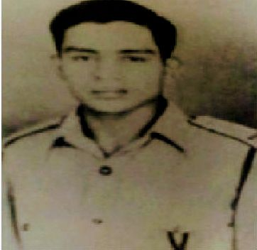
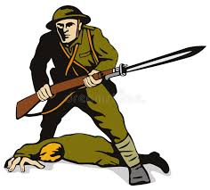

Major Jawahar Singh Mahar was born on December 29, 1921, in the quaint village of Maspati, nestled in Uttarakhand's Pithoragarh district. His father, Shri Joga Singh, raised him with values that would eventually lead him to achieve greatness. From a young age, Mahar harbored a strong desire to serve his nation as an army officer.

Mahar's dream took shape when he joined the prestigious 1st Para (Kumaon) battalion as a 2nd Lieutenant on May 29, 1943, at just 21 years old . His exceptional service earned him a promotion to Major in merely five years. Mahar's bravery and leadership were tested during the Indo-Pak War of 1947-48, where he played a crucial role in the defense of Srinagar airfield and the siege of Poonch.
The story of Major Jawahar Singh Mahar's bravery is a testament to his unwavering courage and dedication to his country.
In October 1947, the 1st Para (Kumaon) battalion, which Major Mahar was a part of, was deployed to Jammu and Kashmir as part of the first Indian Army formation. The battalion played a crucial role in defending the Srinagar airfield against the invading Pakistani forces.
A year later, in June 1948, Major Mahar's unit was once again deployed to Jammu and Kashmir to counter the Pakistani forces. On the night of June 15, 1948, a column led by Major Mahar embarked on a mission to link up with another column coming from Rajouri. The plan was to meet at Samhot, but things took a dramatic turn when they encountered an enemy patrol en route.
Undaunted, Major Mahar cleverly disguised himself as a Pakistani soldier and managed to get his company within 20 yards of the enemy position. However, their guide, a local civilian, inadvertently revealed their true identities, putting Major Mahar and his men in a precarious situation.

Without hesitation, Major Mahar ordered a bayonet charge and led the charge himself. The fierce battle that ensued saw Major Mahar and his men fight valiantly, killing 26 enemy soldiers and capturing eight rifles and a large quantity of ammunition.
Tragically, Major Mahar was severely injured during the battle and succumbed to his wounds. His bravery and selflessness that day earned him the Vir Chakra, one of India's highest gallantry awards.
Major Jawahar Singh Mahar's story serves as a poignant reminder of the sacrifices made by India's brave soldiers in the line of duty. His courage, leadership, and devotion to his country continue to inspire generations of Indians.
English